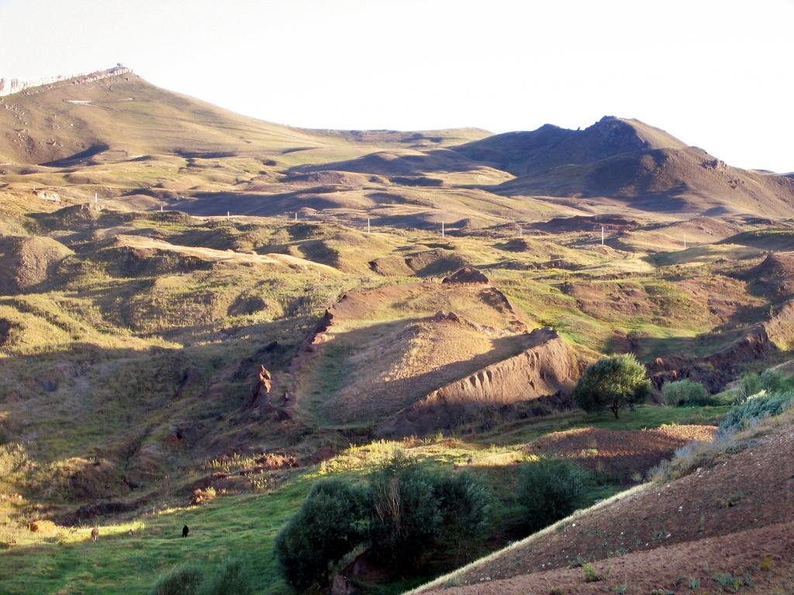
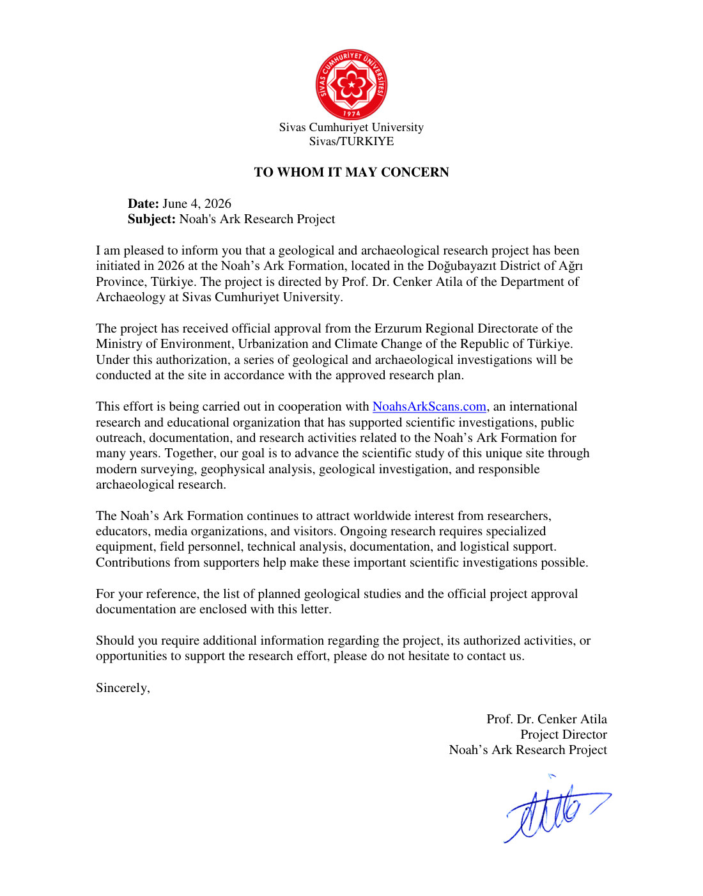
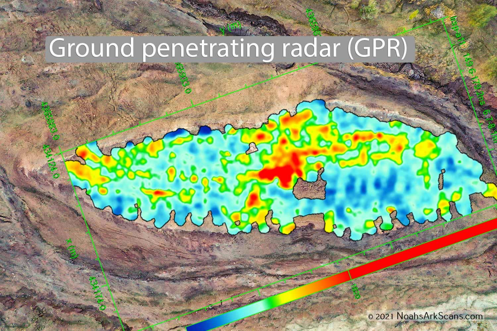
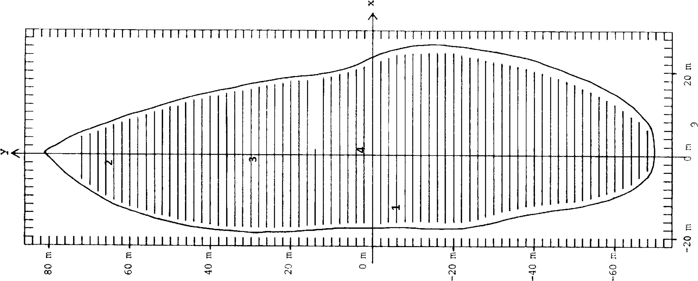

3 de julho de 2026
- Em 18/06/2026, o governo turco autorizou, pela primeira vez, perfuração com extração de núcleo na formação de Durupinar, a 29 km do Monte Ararat.
- A formação tem 157 metros. As medidas da Arca em Gênesis 6:15 (300 côvados) dão ~157 metros.
- Scans de radar já mostraram corredor central de 4 metros, câmaras em camadas e solo com 3x mais matéria orgânica: madeira em decomposição onde não deveria existir madeira.
- O chefe da varredura declarou "95% de confiança" de estrutura naval enterrada.
- O drone que vai descer no buraco foi batizado de "GOPHER", o nome da madeira da Arca em Gênesis 6:14 ("madeira de gofer").
Riram por 60 anos. Agora vão furar o chão, e o que o radar viu lá embaixo não deveria existir.
Chamaram de "formação rochosa natural". Chamaram de coincidência. Chamaram de fanatismo quem apontasse o óbvio. Em junho de 2026, o governo da Turquia assinou a autorização pra perfurar. E o robô que vai entrar no barco enterrado carrega, no próprio nome, a resposta que eles juram não saber.

Abra a sua Bíblia em Gênesis 6:15 e faça a conta comigo: "de trezentos côvados o comprimento da arca". O côvado bíblico mede cerca de 52 centímetros. Trezentos côvados: cerca de 157 metros. Agora olhe a foto acima de novo. A formação de Durupinar, medida por instrumento, tem 157 metros. Não é interpretação. É trena.
Gênesis 6:15 (escrito há milhares de anos)
~157 m
300 côvados de comprimento
Durupinar (medido por instrumento)
157 m
comprimento da formação
Por seis décadas, a resposta oficial foi um dar de ombros: "formação rochosa natural". Curiosa, admitiam. Coincidente, admitiam. Mas natural. O problema é que ninguém, em sessenta anos, explicou por que uma pedra natural teria exatamente as medidas do versículo. E em vez de furar pra descobrir, preferiram rir de quem perguntava.
O que o radar viu antes da broca
Antes da autorização, os pesquisadores passaram anos varrendo o subsolo com radar de penetração (GPR) e análise química. O que apareceu nas imagens tirou o caso da prateleira do folclore: um corredor central de 4 metros atravessando a estrutura. Câmaras laterais. Camadas empilhadas em intervalos regulares, compatíveis com conveses. E a análise de solo cravou o detalhe mais incômodo: matéria orgânica 3 vezes acima do entorno, o padrão químico de madeira apodrecendo, num lugar onde não deveria existir madeira nenhuma.
O acordo histórico de perfuração foi noticiado em 18/06/2026 (Charisma Magazine; ecoado por veículos internacionais na mesma semana). Andrew Jones, líder do projeto Noah's Ark Scans, declarou "95% de confiança de que algo como um navio de madeira em decomposição" causa as anomalias detectadas, e descreveu "um túnel não preenchido que leva a um grande vazio central". A expedição com extração de núcleo começa ainda em 2026.
Veja os documentos com os seus olhos



O nome do robô é uma confissão
Aqui está o detalhe que quase nenhum jornal notou. O drone subterrâneo desenvolvido pra descer no buraco da perfuração recebeu um apelido dos próprios pesquisadores: "Gopher". Agora leia Gênesis 6:14, a instrução de construção da Arca: "Faze para ti uma arca de madeira de gofer". A equipe que o mundo oficial trata como "cautelosa" batizou a própria máquina com o nome da madeira do versículo. Eles já sabem o que esperam encontrar. Só não podem dizer em voz alta antes da broca confirmar.

"E se a Arca é real... o dilúvio é real. E se o dilúvio é real, a pergunta que ninguém quer fazer é: o que exatamente Deus precisou apagar?"
A parte da história que arrancaram da sua Bíblia
Gênesis 6 abre com um dos trechos mais estranhos de toda a Escritura: "os filhos de Deus viram que as filhas dos homens eram formosas... e os gigantes estavam na terra naqueles dias". Duas linhas, sem explicação, e o texto muda de assunto direto pro dilúvio. Por quê? Porque a explicação existia em outro livro. O Livro de Enoque, citado nominalmente na sua Bíblia (Judas 1:14), lido pelos primeiros cristãos, conta o capítulo inteiro: os Vigilantes que desceram, o conhecimento proibido que entregaram, os gigantes que nasceram da mistura, e a corrupção de toda carne que fez o dilúvio ser necessário. A Arca não é uma história infantil de zoológico flutuante. É o registro de uma operação de resgate no fim de um mundo contaminado. E o livro que explicava a contaminação foi deixado de fora do cânon.
- O Livro de Enoque: os Vigilantes, Azazel, os gigantes, o aviso do dilúvio
- Os 12 livros deixados de fora da sua Bíblia, com a história de por que cada um saiu
- A linha do tempo pré-dilúvio: o que Gênesis 6 resume em 4 versículos, explicado
- Acesso imediato e vitalício · Garantia de 7 dias
🔔 O próximo arquivo, antes de todo mundo
Quando a broca descer em Durupinar, quem estiver nesta lista lê primeiro. Sem spam: um arquivo por dia, direto da investigação.